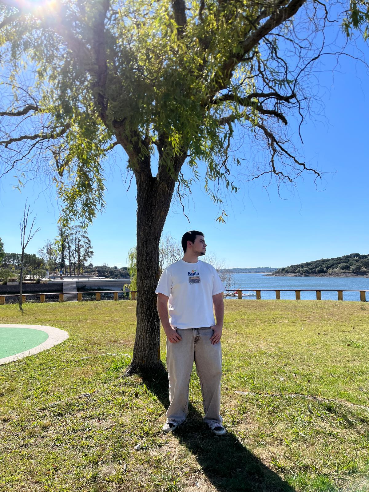
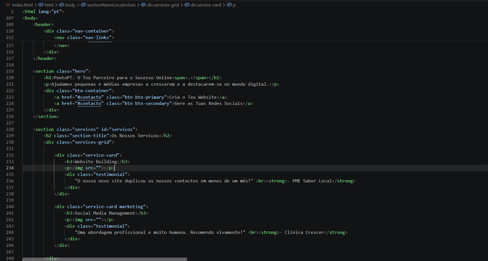

PontoPT cria experiências digitais que fazem o teu negócio crescer — com foco em qualidade, performance e resultados.

Somos uma equipa apaixonada por tecnologia e marketing digital. Acreditamos que uma presença online bem construída é o primeiro passo para gerar confiança e atrair clientes.
Do website às redes sociais, trabalhamos com estratégias claras e execução cuidadosa para que o teu negócio se destaque e evolua continuamente.
Se queres uma marca com identidade, páginas rápidas e conteúdo que faz sentido, estás no sítio certo.
Olá, o meu nome é Simão, tenho 18 anos e sou da Sertã. tenho paixão por programação e multimédia em geral
Sou um programador experiente e tenho muitas horas de experiencia em programação. Eu tenho cuidado em oferecer ao cliente um serviço confiável.
Confia em Ponto.pt, O teu pareceiro para o sucesso online.
